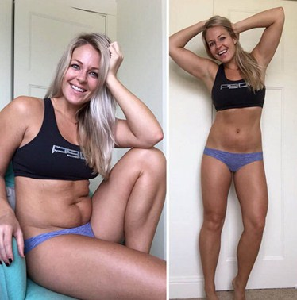
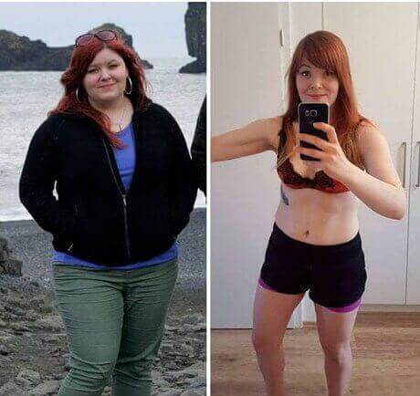
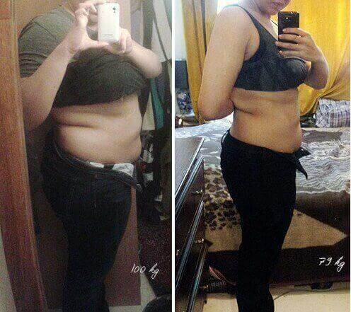
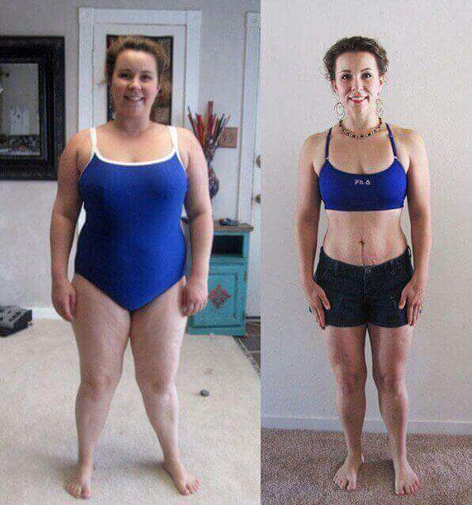
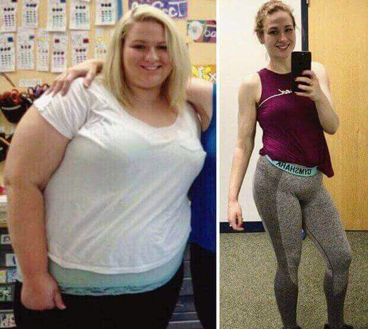
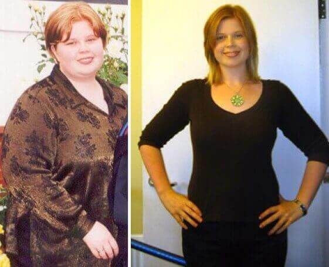
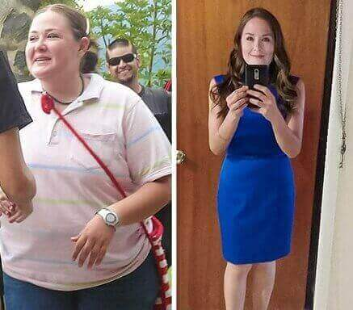
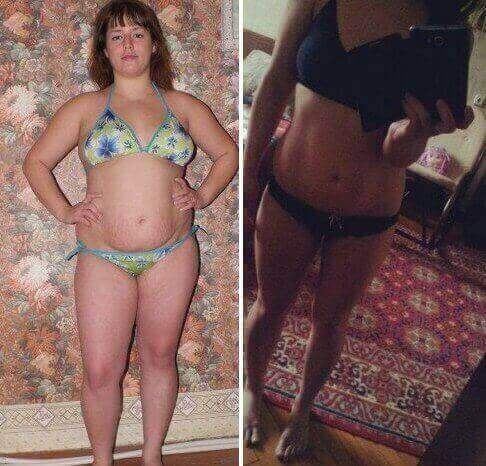

W r. w Polsce uruchomiono projekt «Normal weight», który został opracowany w ramach ogólnoeuropejskiego programu «Let's be healthy», który został zatwierdzony przez rząd w r. Poprosiliśmy o więcej informacji na temat programu Głównego Kardiologa Polski, lekarza najwyższej kategorii, profesora Tomasza Orłowskiego.
Orłowski: Nadwaga we współczesnym społeczeństwie jest największym czynnikiem w występowaniu chorób sercowo-naczyniowych, onkologicznych i innych niebezpiecznych chorób. Problem z czasem tylko się pogarsza.
Trudność w rozwiązaniu tego problemu polega na tym, że w naszej diecie dominują niedrogie, łatwo przyswajalne i wysokokaloryczne produkty spożywcze. Z drugiej strony aktywność fizyczna stale maleje.
Liczne badania przeprowadzone w instytucjach krajowych i zagranicznych wykazały wyraźny związek między nadwagą a występowaniem chorób sercowo-naczyniowych. Zatem nadmiar masy ciała o 10 kg zwiększa ryzyko choroby wieńcowej, udaru mózgu lub zawału serca o 35%. A w przypadku przekroczenia masy ciała o 30 kg w porównaniu z normą ryzyko każdej choroby sercowo-naczyniowej osiąga prawie 100%.
Podam więcej oszałamiających cyfr. Te same 10 kg nadwagi skraca życie człowieka średnio o 4 lata, a 30 kg - nawet o 15 lat.
Biorąc pod uwagę znaczenie korelacji masy ciała ze zdrowiem ludzi, Instytut Chorób Sercowo-Naczyniowych w Barnaclínic opracował projekt «Normal weight» w ramach ogólnoeuropejskiego programu «Let's be healthy». Obejmuje zintegrowane podejście do rozwiązania tego problemu. Ale główny nacisk idzie na rozpowszechnianie nowoczesnych bezpiecznych produktów na odchudzanie.
Niestety lekarze zaczęli interesować się tym problemem zbyt późno i do niedawna nie było progresywnych i uniwersalnych preparatów na odchudzanie. Jednak dzięki aktywnym staraniom i rozwojowi zespołu naukowców z Grup Hospital Clínic Barnaclínic wynaleziono jeden preparat. Tylko że jest jednocześnie progresywny i uniwersalny. Proszek rozpuszczalny w wodzie Keto Light został opracowany pod auspicjami Światowej Organizacji Zdrowia i jest wysoko ceniony przez wiodących ekspertów z centrali. Główne zalety tego preparatu:
1. Jest całkowicie bezpieczny i pozwala na utratę wagi nawet ze szybkością 20 kg miesięcznie.
2. Pozwala prowadzić normalny styl życia. Dlatego nie musimy stosować dietę i chodzić na siłownię.
Innymi słowy, Keto Light w pełni spełnia wymagania współczesnej osoby - aby szybko schudnąć bez konsekwencji dla zdrowia i bez potrzeby zmiany zwykłego stylu życia. Jest dostępny w postaci proszku rozpuszczalnego w wodzie. Można go stosować od 1 do 3 razy dziennie.
Jego zasada działania jest podobna do zasady diety ketonowej, która ostatnio stała się bardzo popularna, w której nacisk nie idzie na węglowodany, ale na tłuszcze. W tym przypadku wątroba zaczyna wytwarzać tak zwane ciała ketonowe, które rozkładają tłuszcz. Ale ta dieta ma pełno wad. Po pierwsze, węglowodany są również niezbędne dla organizmu. I przy takiej diecie nie wchodzą do ludzkiego ciała. Po drugie, zwiększa się obciążenie wątroby, ponieważ znacznie więcej tłuszczu zaczyna dostawać się do organizmu. Keto Light jest wolny od tych niedociągnięć. NIE wymaga odrzucenia węglowodanów.
Podkreślam, że w ogóle nie wymaga przestrzegania żadnej diety. Osoba je, tak jak zwykle. Dlatego normalizacja wagi za pomocą Keto Light absolutnie nie wywołuje stresującej sytuacji dla organizmu.
Preparat przeszedł wszystkie niezbędne testy w Grup Hospital Clínic Barnaclínic i został zatwierdzony do stosowania w UE.
Niestety, z uwagi na fakt, że opracowanie produktu nie zostało sfinansowane przez WHO, nie ma możliwości bezpłatnego rozpowszechnienia go wśród ludności. Ale ponieważ Keto Light został tymczasowo włączony do ogólnoeuropejskiego projektu «Normal weight», koszt preparatu jest znacznie zmniejszony w porównaniu z ceną na rynku.
W celu szybkiej dystrybucji preparatu Keto Light postanowiono stworzyć oficjalną stronę internetową, za pośrednictwem której każdy polak online może kupić Keto Light po obniżonej cenie.
Okres promocyjny na dystrybucję rozpuszczalnego w wodzie proszku do odchudzania Keto Light obowiązuje do włącznie. Następnie, na podstawie jego wyników, zostanie podjęta decyzja o dalszym stosowaniu Keto Light w ramach ogólnoeuropejskiego projektu «Normal weight».
Osobiście interesuje mnie fakt, że każdy polak z nadwagą sporządza wniosek na oficjalnej stronie internetowej dotyczącej preparatu Keto Light. Pozbycie się nadwagi byłoby moim osobistym zwycięstwem jako dyplomowanego lekarza.
Przypominamy, że ogólnoeuropejski program przy wsparciu WHO jest ważny tylko do włącznie.
Komentarze: 17







